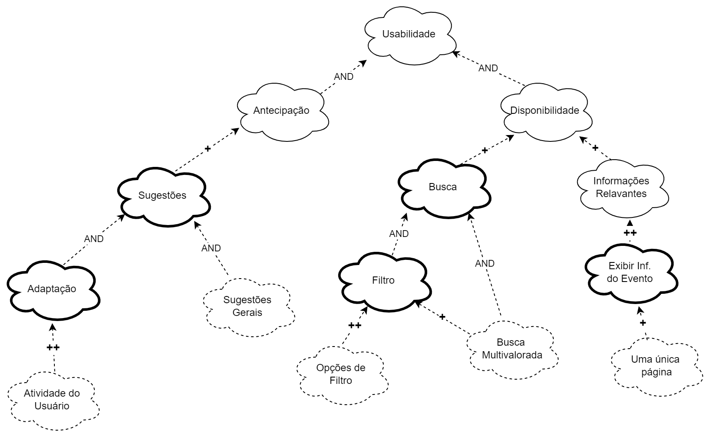
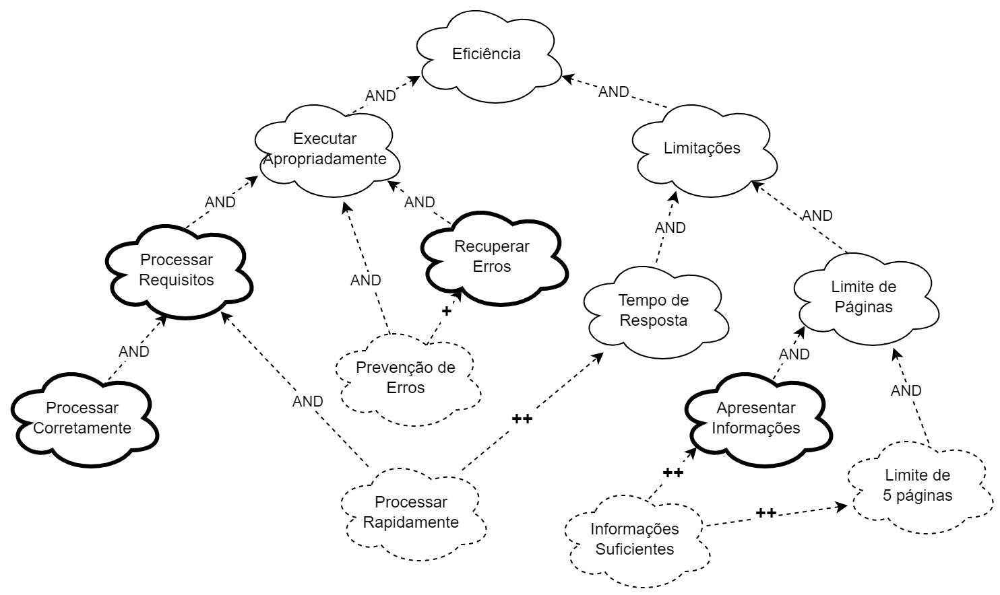

NFR Framework
Introdução
Uma forma de representação e análise dos Requisitos Não-Funcionais é o NFR Framework, o qual visa à implementação de resoluções particulares. Sendo assim, para tal, considera-se as características gerais do sistema em questão e de seu domínio. No NFR Framework, faz-se o uso do modelo de Softgoal Interdependency Graph (SIG).
Softgoal Interdependency Graph
O Softgoal Interdependency Graph (SIG) é uma forma de visualização do funcionamento do NFR Framework. Dessa forma, trata-se de um gráfico que registra os posicionamentos da equipe de desenvolvimento acerca dos softgoals e explicita suas interdependências de forma gráfica e concisa1.
Tipos de Softgoal
Para a compreensão do SIG, é inexorável discernir a definição de NFR Softgoal: um objetivo que não é explicitamente definido e seus critérios de satisfação são imprecisos. Sendo assim, um softgoal é uma característica abstrata que está sujeita à vistoria, ou seja, postula-se posteriormente o destino de um determinado softgoal. Além disso, os softgoals podem ser operacionalizados, nesse caso, tomam uma forma concreta. Portanto, entende-se como funcionalidades. Por fim, há os softgoals de afirmação, os quais são escritos em linguagem natural e se tratam de registros adicionais e argumentativos, os quais podem ser incrementados ao modelo1. Os tipos de softgoal estão ilustrados na Figura 1.
Figura 1 - Tipos de Softgoal

Fonte: (SILVA, 2019)
Interdependências
As interdependências são definições para as associações que ocorrem entre softgoals. Tais são divididas em decomposições e contribuições:
Decomposições
As decomposições podem ocorrer em todos os níveis de abstração: Softgoals de NFR, de Operacionalização e de Afirmação. Nas três primeiras decomposições, os softgoals são subdivididos em softgoals especificados (SILVA, 2019)1. Os quatro tipos estão explicitados na figura 2.
- Decomposição NFR: ajuda a dividir vicissitudes primordiais em partes menores, o que reduz as ambiguidades e facilita a priorização.
- Decomposição de Operacionalização: tem por finalidade refinar uma solução geral em soluções particulares.
- Decomposição de Afirmação: serve como afirmação ou negação de justificativas específicas do projeto.
- Decomposição de Priorização: trata-se de uma decomposição especial, na qual o softgoal é refinado em outro softgoal de mesmo tipo e tópico. No entanto, associa-se uma prioridade.
Figura 2 - Tipos de Decomposição
Fonte: (SILVA, 2019)
Contribuições
Num NFR Framework, os softgoals se especializam cada vez mais. Por conseguinte, o um softgoal derivado de outro pode contribuir de forma integral ou truncada, e também de forma positiva ou negativa, para o softgoal do qual ele derivou. Portanto, listar-se-á os tipos de contribuição2:
- AND: se os softgoals derivados forem satisfeitos, o softgoal primordial também será.
- OR: se algum dos softgoals derivados forem satisfeitos, o softgoal primordial também será.
- MAKE(++): um softgoal originado contribui de forma plenamente positiva, logo o softgoal original também será satisfeito.
- BREAK(--): um softgoal originado contribui de forma plenamente negativa, logo o softgoal original será negado.
- HELP(+): um softgoal originado realiza uma contribuição restritamente positiva, o que reflete da mesma forma e na mesma intensidade no softgoal primordial.
- HURT(-): um softgoal originado realiza uma contribuição restritamente negativa, o que reflete da mesma forma e na mesma intensidade no softgoal primordial.
- UNKNOWN(?): contribuição incógnita.
- EQUALS: relação direta entre as satisfações do softgoal derivado e a do primordial.
- SOME: a forma de contribuição é conhecida, no entanto, a intensidade dessa contribuição é desconhecida.
Propagação de Impactos
A propagação de impactos no NFR Framework envolve a identificação das relações de dependência entre os requisitos não funcionais, bem como a análise de como uma mudança em um requisito pode afetar outros requisitos relacionados. Isso requer uma compreensão clara das interações entre os requisitos, bem como a capacidade de avaliar as prioridades e trade-offs entre eles. Ao considerar a propagação de impactos, os engenheiros de requisitos podem tomar decisões informadas sobre mudanças e gerenciar os possíveis efeitos colaterais de forma eficaz. A seguir são apresentados os tipos de softgoals de impacto e suas respectivas notações2:
- ✓ (satisfeito): Indica que um requisito não funcional contribui positivamente para a satisfação de outro requisito.
- 𝒲+ (fracamente satisfeito): ndica uma relação de impacto positiva, mas menos forte do que a notação ✓.
- X (negado): Indica que um requisito não funcional afeta negativamente outro requisito, negando ou contradizendo sua realização.
- 𝒲- (fracamente negado): Similar à notação X, mas com uma relação de negação mais fraca.
- 🗲 (conflitante): Indica uma relação de conflito entre requisitos não funcionais. Isso significa que os requisitos possuem características positivas e negativas.
- u (indeterminado): Uma relação indeterminada ou desconhecida entre requisitos não funcionais. Isso ocorre quando não há informações suficientes para determinar o impacto de um requisito em outro.
Metodologia
Os frameworks foram separados por temas, esses temas foram divididos em três para limitar o escopo aqui trabalhado. Após isso, fez-se uma introspecção para a construção do SIG a partir dos tópicos gerais definidos, a fim de fazer relações com os Requisitos Não-Funcionais da Tabela 12, após isso, fez-se o uma revisão na literatura e foi feita a validação do SIG confeccionado. A plataforma utilizada para a elaboração foi o Draw.io.
Cartões de Especificação
Os cartões de especificação a seguir, Tabelas de 1 a 5, foram utilizados para definir os Requisitos Não-Funcionais a serem utilizados na confecção dos NFR Frameworks. Fontes de evidência na literarura: FE2.
Obs: Os valores de prioridade foram baseados no modelo de priorização First Things First que pode ser encontado aqui.
Tabela 1 - Cartão de Especificação 1
| Nº Requisito: 1 (RNF01) | Classificação: Usabilidade |
|---|---|
| Descrição: O app deve fornecer eventos direcionados. | |
| Justificativa: O sistema deve ser capaz de direcionar eventos ao usuário a partir de suas preferências pessoais. Assim o usuário não irá perder tempo buscando por eventos que se adequem ao seu perfil . | |
| Origem do Requisisto: Projetista de Software | |
| Critério de Aceitação: O sistema deve ser capaz de recomendar ao usuário eventos condizentes com suas preferências. | |
| Dependências: Atividade do Usuário | |
| Prioridade: 4,05 | |
| Conflitos: Nenhum | |
| História: 23/05/2023 |
Fonte: Gabriel Campello
Tabela 2 - Cartão de Especificação 2
| Nº Requisito: 2 (RNF02) | Classificação: Usabilidade/Eficiência |
|---|---|
| Descrição: O app deve disponibilizar todas as informações do evento em uma página. | |
| Justificativa: Contribui para uma melhor visualização das informações por parte do usuário, e por conseguinte melhora a eficiência do app. | |
| Origem do Requisisto: Projetista de Software | |
| Critério de Aceitação: O sistema deve disponibilizar todas informações necessárias sobre o evento em uma única página. | |
| Dependências: Nenhuma | |
| Prioridade: 2,70 | |
| Conflitos: Nenhum | |
| História: 23/05/2023 |
Fonte: Gabriel Campello
Tabela 3 - Cartão de Especificação 3
| Nº Requisito: 3 (RNF03) | Classificação: Eficiência |
|---|---|
| Descrição: A compra de ingressos deve ser realizada em menos de 5 páginas (botões) | |
| Justificativa: Operações que podem ser efetuadas em menos de 5 cliques em geral são consideradas eficientes. No caso do processo de compra, quão mais rapidamente essa operação for efetuada, não só o tempo gasto pelo usuário, mas também o gasto de energia do aplicativo serão reduzidos. | |
| Origem do Requisisto: Projetista de Software | |
| Critério de Aceitação: O sistema deve efetuar a operação de compra em menos de 5 cliques. | |
| Dependências: Informações Suficientes | |
| Prioridade: 1,35 | |
| Conflitos: Nenhum | |
| História: 23/05/2023 |
Fonte: Gabriel Campello
Tabela 4 - Cartão de Especificação 4
| Nº Requisito: 4 (RNF04) | Classificação: Desempenho |
|---|---|
| Descrição: As ações realizadas no app não devem demorar mais que 200 ms para responder ao usuário | |
| Justificativa: As ações rápidas no app garantem uma experiência fluida, mantendo o usuário engajado e evitando frustrações desnecessárias. | |
| Origem do Requisisto: Projetista de Software | |
| Critério de Aceitação: As ações realizadas no app devem ser executadas e responder ao usuário em um tempo máximo de 250 ms para garantir uma experiência ágil e satisfatória. | |
| Dependências: Performance | |
| Prioridade: 0,469 | |
| Conflitos: Nenhum | |
| História: 23/05/2023 |
Fonte: Sidney Fernando
Tabela 5 - Cartão de Especificação 5
| Nº Requisito: 5 (RNF05) | Classificação: Usabilidade |
|---|---|
| Descrição: O app deve permitir a filtragem dos eventos cadastrados no banco de dados. | |
| Justificativa: A filtragem de eventos no app proporciona aos usuários a capacidade de encontrar rapidamente informações relevantes, melhorando a usabilidade e a eficiência na busca de eventos específicos no banco de dados. | |
| Origem do Requisisto: Projetista de Software | |
| Critério de Aceitação: Filtragem flexível. | |
| Dependências: Atividade do Usuário | |
| Prioridade: 1,042 | |
| Conflitos: Nenhum | |
| História: 23/05/2023 |
Fonte: Sidney Fernando
NFR 00 - Geral
A Figura 3 a seguir demonstra o Softgoal Interdependency Graph para se ter uma visão geral.
Figura 3 - SIG Geral

Fonte: (SILVA, 2019)
No entanto, dada a limitação do grupo de trabalhar apenas com Requisitos Não-Funcionais ainda não implementados pelo site, adaptou-se o SIG acima para a utilização dos tópicos necessários, presentes na Figura 4.
Figura 4 - SIG Geral Adaptado

Fonte: (SILVA, 2019)
NFR 01 - Usabilidade
Os Requisitos utilizados para a confecção da Figura 5 estão presentes na Tabela 12:
- RNF01: indica que o usuário deve receber eventos sugeridos de acordo com sua atividade no site.
- RNF02: infere que todas as informações de um evento devem estar contidas em uma única página, sem páginas adicionais ou pop-ups.
- RNF05: refere-se à necessidade da filtragem sob diversas óticas dentro da busca no site.
Figura 5 - SIG Usabilidade

Fonte: Autores
Legenda:
- Sugestões: refere-se ao L02 - Sugestões de Eventos.
- Opções de filtro: refere-se ao L01 - Filtrar Eventos.
Requisitos Não-Funcionais - Usabilidade
Na Tabela 6, estão listados os RNF presentes no NFR Famework de Usabilidade :
| RNF (Fonte) | Descrição | Classificação | Origem |
|---|---|---|---|
| Adaptação (FE1) | O sistema deve ser adaptativo às atividades do usuário. | Usabilidade | Sugestões |
| Disponibilidade (FE1) | O sistema deve disponibilizar as informações. | Usabilidade | Usabilidade |
| Exibir Inf. do Evento (FE1) | O sistema deve exibir as informações do evento específico. | Usabilidade | Informações Relevantes |
| Sugestões Gerais (FE3) | O sistema deve exibir as sugestões padrões antes de se ter uma atividade do usuário no site, feitas com base no Usuário. | Usabilidade | Sugestões |
Fonte: Arthur de Melo
Propagação dos Impactos - Usabilidade
A seguir, na Tabela 7, temos a avaliação da propagação dos impactos relativa à Figura 5.
Tabela 7 - Impactos Usabilidade
| NFR | Impacto | Avaliador |
|---|---|---|
| Usabilidade | 𝒲- | Gabriel Campello |
| Antecipação | 𝒲+ | Gabriel Campello |
| Sugestões | 𝒲- | Gabriel Campello |
| Adaptação | 𝒲- | Gabriel Campello |
| Sugestões Gerais | 𝒲+ | Gabriel Campello |
| Atividade do Usuário | ✓ | Gabriel Campello |
| Disponibilidade | 𝒲+ | Gabriel Campello |
| Busca | 𝒲+ | Gabriel Campello |
| Filtro | 𝒲- | Gabriel Campello |
| Opções de Filtro | X | Gabriel Campello |
| Busca Multivalorada | X | Gabriel Campello |
| Informações Relevantes | ✓ | Gabriel Campello |
| Exibir Inf. do Evento | ✓ | Gabriel Campello |
| Página Única | X | Gabriel Campello |
Fonte: Gabriel Campello
NFR 02 - Eficiência
Os Requisitos utilizados para a confecção da Figura 6 estão presentes na Tabela 12:
- RNF02: infere que todas as informações de um evento devem estar contidas em uma única página, sem páginas adicionais ou pop-ups.
- RNF03: limita em até 5 a quantidade de páginas para realizar a compra.
- RNF04: limita o tempo de resposta a 200ms.
Figura 6 - SIG Eficiência

Fonte: Arthur de Melo
Legenda:
- Processar Rapidamente: refere-se ao RNF04, o qual limita o tempo de resposta a 200ms.
- Informações Suficientes: informações suficientemente relevantes para a realização de um processo.
Requisitos Não-Funcionais - Eficiência
Na Tabela 8, estão listados os RNF presentes no NFR Famework de Eficiência:
Tabela 8 - Requisitos Não-Funcionais 2
| RNF (Fonte) | Descrição | Classificação | Origem |
|---|---|---|---|
| Tempo de Resposta (FE1 e FE2) | O sistema deve possuir uma limitação superior do tempo de processamento de uma requisição. | Eficiência | Limitações |
| Limite de Páginas (FE2) | O sistema deve possuir uma limitação do espaço ocupado. | Eficiência | Limitações |
| Apresentar Informações (FE1) | O sistema deve exibir as informações do evento específico. | Eficiência | Limite de Páginas |
Fonte: Arthur de Melo
Propagação dos Impactos - Eficiência
Na Tabela 9, está presente a avaliação da propagação dos impactos referentes à Figura 6.
Tabela 9 - Impactos Eficiência
| NFR | Impacto | Avaliador |
|---|---|---|
| Eficiência | 𝒲+ | Gabriel Campello |
| Executar Apropriadamente | 𝒲+ | Gabriel Campello |
| Processar Requisitos | 𝒲+ | Gabriel Campello |
| Processar Corretamente | 𝒲+ | Gabriel Campello |
| Recuperar de Erros | 𝒲+ | Gabriel Campello |
| Prevenção de Erros | 𝒲+ | Gabriel Campello |
| Limitações | ✓ | Gabriel Campello |
| Limite de Páginas | 𝒲+ | Gabriel Campello |
| Apresentar Informações | ✓ | Gabriel Campello |
| Informações Suficientes | ✓ | Gabriel Campello |
| Limite de 5 Páginas | X | Gabriel Campello |
| Tempo de Resposta | ✓ | Gabriel Campello |
| Processar Rapidamente | ✓ | Gabriel Campello |
Fonte: Gabriel Campello
NFR 03 - Desempenho
Os Requisitos utilizados para a confecção da Figura 7 estão presentes na Tabela 12:
- RNF03: limita em até 5 a quantidade de páginas para realizar a compra.
- RNF04: limita o tempo de resposta a 200ms.
Figura 7 - SIG Desempenho

Fonte: Arthur de Melo e Sidney Fernando
Legenda:
- Ordem Lógica: uma compra deve aplicar a ordem lógica observada na vida real.
- Limite de páginas: refere-se ao RNF03, o qual limita a quantidade de páginas em até 5 para a compra.
- Velocidade: refere-se ao RNF04, o qual limita o tempo de resposta a 200ms.
Requisitos Não-Funcionais - Desempenho
Na Tabela 10, estão listados os RNF presentes no NFR Famework de Desempenho :
Tabela 10 - Requisitos Não-Funcionais 3
| RNF (Fonte) | Descrição | Classificação | Origem |
|---|---|---|---|
| Tempo de Resposta (FE1 e FE2) | O sistema deve possuir uma limitação superior do tempo de processamento de uma requisição. | Desempenho | Desempenho |
| Infraestrutura (FE2) | O sistema deve possuir uma infraestrutura para processar os dados. | Desempenho | Tempo de Resposta |
| Servidores (FE2) | O sistema deve possuir servidores para perdurar os dados. | Desempenho | Infraestrutura |
| Manutenção (FE1 e FE2) | O sistema deve ser capaz de realizar a manutenção dos servidores e de outros aspectos da infraestrutura. | Desempenho | Infraestrutura |
Fonte: Arthur de Melo
Propagação dos Impactos - Desempenho
Na Tabela 11, está presente a avaliação da propagação dos impactos referentes à Figura 6.
Tabela 11 - Impactos Desempenho
| NFR | Impacto | Avaliador |
|---|---|---|
| Desempenho | 🗲 | Arthur de Melo |
| Realizar Ações | 🗲 | Arthur de Melo |
| Compra | 🗲 | Arthur de Melo |
| Ordem Lógica | ✓ | Arthur de Melo |
| Ações Rápidas | X | Arthur de Melo |
| Limite de Páginas | 𝒲- | Arthur de Melo |
| Velocidade | 𝒲- | Arthur de Melo |
| Processar Corretamente | ✓ | Arthur de Melo |
| Tempo de Resposta | 𝒲+ | Arthur de Melo |
| Infraestrutura | 𝒲+ | Arthur de Melo |
| Servidores | 𝒲+ | Arthur de Melo |
| Manutenção | ✓ | Arthur de Melo |
Fonte: Arthur de Melo
Requisitos Não-Funcionais
A Tabela 12 a seguir lista os Requisitos Não-Funcionais utilizados para a criação do NFR Framework.
Tabela 12 - Requisitos Não-Funcionais Não Implementados
| ID | Descrição | Rastreabilidade | Implementação |
|---|---|---|---|
| RNF01 | O app deve fornecer eventos direcionados. | IS10, Q11, BS35, BS36, OBS22 | Não |
| RNF02 | O app deve disponibilizar todas as informações do evento em uma página. | IS11, BS25, BS26, BS27, BS28, BS29, BS30, OBS15, OBS16 | Não |
| RNF03 | A compra deve ser feita em no máximo 5 páginas. | IS13, IS16, Q14, OBS17, OBS18, IS14 | Não |
| RNF04 | O app não deve ter tempo de resposta superior a 200 ms. | Q12 | Não |
| RNF05 | O app deve permitir a filtragem dos eventos cadastrados no banco de dados. | Q13 | Não |
Fonte: Matheus Henrique e Arthur de Melo
A Tabela 13 lista os Requisitos Não-Funcionais elicitados pelo NFR Framework.
| ID | Descrição |
|---|---|
| NFR01 | O sistema deve possuir uma limitação superior do tempo de processamento de uma requisição. |
| NFR02 | O sistema deve possuir uma infraestrutura para processar os dados. |
| NFR03 | O sistema deve possuir servidores para perdurar os dados. |
| NFR04 | O sistema deve ser capaz de realizar a manutenção dos servidores e de outros aspectos da infraestrutura. |
| NFR05 | O sistema deve possuir uma limitação do espaço ocupado. |
| NFR06 | O sistema deve exibir as informações do evento específico. |
| NFR07 | O sistema deve disponibilizar as informações. |
| NFR08 | O sistema deve ser adaptativo às atividades do usuário. |
Fonte: Arthur de Melo
Fontes Externas
Por fim, a Tabela 14 explicita as Fontes Externas como revisão na literatura.
| ID | Autores | Título |
|---|---|---|
| FE1 | SILVA | NFR4ES: Um Catálogo de Requisitos Não-Funcionais para Sistemas Embarcados |
| FE2 | PAIM, et al | Enhancing Data Warehouse Design with the NFR Framework |
| FE3 | CHUNG, et al | Non-functional requirementsin software engineering |
Fonte: Arthur de Melo
Bibliografia
PAIM, F. R. S., CASTRO, J. F. B. Enhancing Data Warehouse Design with the NFR Framework. Centro de Informática UFPE, Recife, 2019. Disponível em: http://wer.inf.puc-rio.br/WERpapers/artigos/artigos_WER02/paim.pdf. Acesso em: 22/05/2023
Referências Bibliográficas
1. SILVA, Reinaldo Antônio. NFR4ES: Um Catálogo de Requisitos Não-Funcionais para Sistemas Embarcados. Centro de Informática UFPE, Recife, 2019. Disponível em: https://repositorio.ufpe.br/handle/123456789/34150. Acesso em: 22/05/2023.
2.CHUNG, L., NIXON, B. A., YU, E., MYLOPOULOS, J. Non-functional requirementsin software engineering. Springer Science & Business Media: [S.l.], 2000. v. 5.
Histórico de Versões
| Versão | Data | Descrição | Autor(es) | Revisor(es) |
|---|---|---|---|---|
1.0 |
22/05/2023 | Introdução, SIG, Tipos de Softgoal e Interdependências. | Arthur de Melo | Geovanna Maciel |
1.1 |
22/05/2023 | SIG Usabilidade e Desempenho | Arthur de Melo, Gabriel Campello e Sidney Fernando | Geovanna Maciel |
1.1 |
22/05/2023 | SIG Eficiência | Arthur de Melo, Gabriel Campello e Sidney Fernando | Geovanna Maciel |
1.4 |
22/05/2023 | Adição Notações de Impacto e Avaliação Impactos Usabilidade | Gabriel Campello | Geovanna Maciel |
1.5 |
22/05/2023 | Avaliação Impactos Eficiência | Gabriel Campello | Geovanna Maciel |
1.6 |
23/05/2023 | Cartões de Especificação e Avaliação Impactos Desempenho. | Arthur de Melo | Geovanna Maciel |
1.7 |
23/05/2023 | Requisitos Elicitados e hyperlinks. | Arthur de Melo | Geovanna Maciel |
1.8 |
23/05/2023 | Adição dos Cartões 1 a 3 e refatoração de Tabelas | Gabriel Campello | Geovanna Maciel |
1.9 |
23/05/2023 | Adição dos Cartões 4 e 5 | Sidney Fernando | Geovanna Maciel |